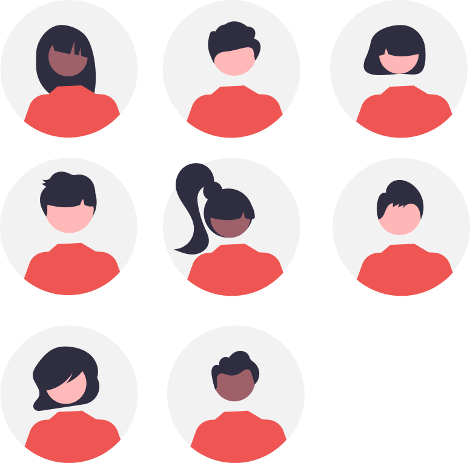

Cahier de texte
Avertissement :#

Le 10/12#
Du 05/11#
-
Retour sur le T.A.F. à finir et à rendre... ;
-
Etat d'avancement de la programmation des objets connectés avec la carte QuickPi :
- Revoir les Parcours_1.ipynb Capytale n° 6b23-4017450 et Parcours_2.ipynb Capytale n° 4ba8-4360814 ;
- Faire le Parcours_3.ipynb Capytale n° 093a-4361021 ;
notez vos codes personnels pour chaque parcours pour y retourner d'une fois sur l'autre et conservez progressivement une trace de vos scripts sur Capytale et dans votre classeur numérique.
-
Lire le cours et faire les exercices concernant Les capteurs et la chaîne d'acquisition ressource Capteur_US-HC-SR04.pdf (Cf Correction des exercices 1 et 2);
-
Revoir la partie "Comprendre" du notebook Network-TP1 Capytale e7c0-3876579 ;
-
Lire le cours puis faire les exercices de synthèse sur les réseaux informatiques avec le protocole de communication TCP/IP et l'application au Tri Postal ;
Les 17 et 18/10#
- Evaluation Robot Camper Trolley ;
-
Reprendre la programmation des objets connectés avec la carte QuickPi :
- Revoir les Parcours_1.ipynb Capytale n° 6b23-4017450 et Parcours_2.ipynb Capytale n° 4ba8-4360814 ;
- Faire le Parcours_3.ipynb Capytale n° 093a-4361021 ;
notez vos codes personnels pour chaque parcours pour y retourner d'une fois sur l'autre et conservez progressivement une trace de vos scripts sur Capytale et dans votre classeur numérique.
-
DERNIER RAPPEL Rendre l'étude des actions mécaniques du système Chargeur Télescopique et rendre votre notebook jupyter sur Capytale n°b588-3945902 ;
-
Finir en DM l'étude du Robot Camper Trolley ;
-
Poursuivre la programmation des objets connectés avec la carte QuickPi ;
Les 11 et 15/10#
- Correction de l'équilibre du buggy T2M Black Pirate sur sol horizontal ;
- Revoir les études de cinématique, de transmission de puissance et d'énergétique du Cozmo ainsi que son étude statique ;
- Rendre l'étude des actions mécaniques du système Chargeur Télescopique et rendre votre notebook jupyter sur Capytale n°b588-3945902 ;
- Se préparer pour une évaluation écrite le 17/10 ;
Les 17 et 20/09#
-
Retour sur le T.A.F. ;
-
Point de synthèse sur l'étude des actions mécaniques : Modélisation de l'équilibre d'un véhicule à roues et applications au buggy T2M Black Pirate ;
- Finir l'étude des actions mécaniques du système Chargeur Télescopique et rendre votre notebook jupyter sur Capytale n°b588-3945902 ;
Les 03, 06, 10 et 13/09#
-
Créer un compte élève sur Capytale avec le code Sésame
WWJ9ZDMSP; -
Organiser un classeur numérique pour la SI sur GitHub -> Reprendre en main l'environnement web de Visual Studio Code depuis votre iPad et depuis un des PC du labo de SI pour gérer vos fichiers ;
-
Faire l'étude des actions mécaniques du système béquille de moto -> Compléter le notebook jupyter ;
Télécharger le notebook : Actions_Mecaniques-Bequille_De_Moto.ipynb
Revoir la modélisation des Actions mécaniques sur ECligne...
-
Finir l'étude des actions mécaniques du système béquille de moto et transmettre votre notebook jupyter complété par mail ;
-
Faire l'étude des actions mécaniques du système Chargeur Télescopique Capytale n°b588-3945902